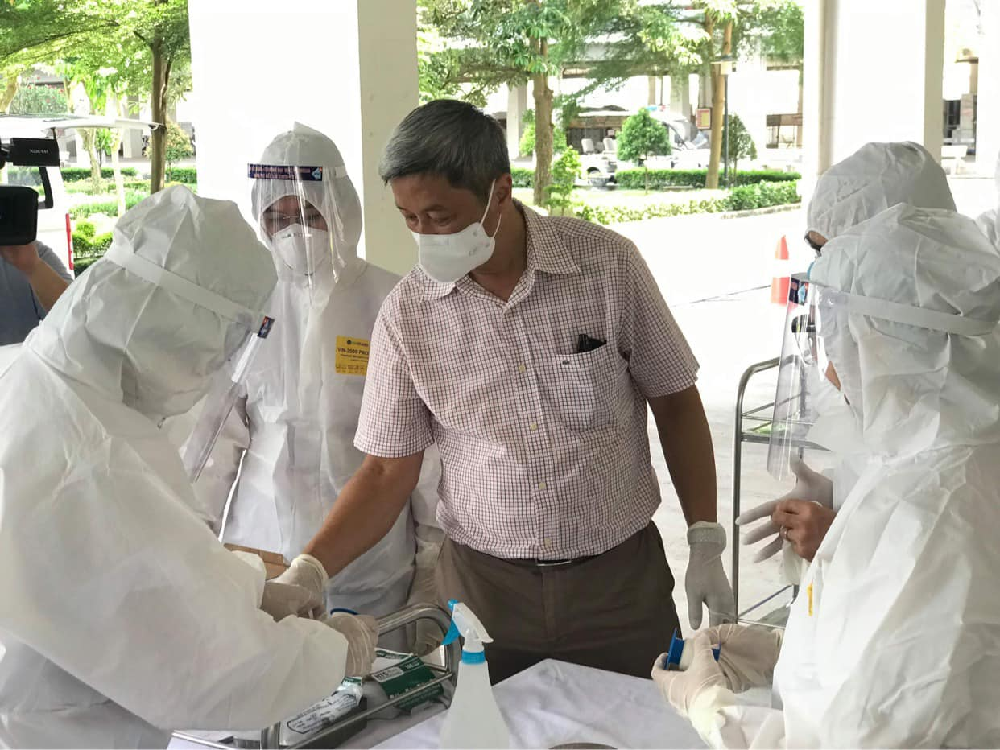
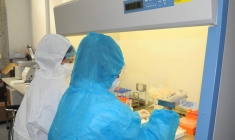

Bộ Y tế đề nghị Hà Nội cử 20 đội cấp cứu hỗ trợ Bắc Giang tiêm vắc xin
COVID-19 từ ngày 1/6
Suckhoedoisong.vn - Bộ Y tế đề nghị Sở Y tế Hà Nội chỉ đạo các bệnh viện
trên địa bàn tổ chức 20 đội cấp cứu, mỗi đội 1 bác sĩ và 2 điều dưỡng, 1
xe cứu thương, thường trực cấp cứu tại các điểm tiêm chủng vắc xin
COVID-19 trên địa bàn tỉnh Bắc Giang
Ngày 31/5, Bộ Y tế có Công văn số 4414/BYT-KCB gửi Giám đốc Sở Y tế Hà Nội
về việc hỗ trợ Bắc Giang triển khai tiêm chủng vắc xin phòng COVID-19.
Theo đó, thực hiện ý kiến chỉ đạo của Ban Chỉ đạo quốc gia phòng, chống
dịch COVID-19, tỉnh Bắc Giang sẽ triển khai tiêm chủng vắc xin phòng
COVID-19 trên địa bàn tỉnh.
Bộ Y tế đề nghị Sở Y tế Hà Nội chỉ đạo các bệnh viện trên địa bàn tổ chức
20 đội cấp cứu (mỗi đội 1 bác sĩ và 2 điều dưỡng, 1 xe cứu thương), thường
trực cấp cứu tại các điểm tiêm chủng trên địa bàn tỉnh Bắc Giang (bắt đầu
từ ngày 1/6 đến khi hoàn thành đợt tiêm, khoảng 7-10 ngày).

Bộ Y tế cũng đề nghị Sở Y tế TP Hà Nội chỉ đạo các bệnh viện sẵn sàng tiếp
nhận, thu dung điều trị các trường hợp bị phản ứng nặng sau tiêm chủng vắc
xin COVID-19 được chuyển đến do vượt quá khả năng điều trị tại chỗ.
Theo phân bổ của Bộ Y tế trong đợt này, Bắc Giang có 200.000 liều vắc xin
phòng COVID-19 để tiêm chủng. Liên quan đến công tác tiêm chủng và xét
nghiệm phục vụ phòng chống dịch trên địa bàn tỉnh Bắc Giang, Thứ trưởng Bộ
Y tế Nguyễn Trường Sơn- Trưởng bộ phận Thường trực công tác đặc biệt của
Bộ Y tế tại Bắc Giang cho biết Bộ Y tế sẵn sàng điều động 500 sinh viên
trường Cao đẳng y tế Bạch Mai và hơn 400 nhân lực y tế khác để hỗ trợ Bắc
Giang triển khai tiêm chủng vắc xin phòng COVID-19 và lấy mẫu xét nghiệm.
TIN LIÊN QUAN

Gần 30.000 cán bộ y tế, sinh viên y dược đã có mặt, sẵn sàng đến
chống dịch COVID- 19 tại Bắc Giang, Bắc Ninh
SKĐS - Ngoài 2.743 lực lượng y tế tham gia hỗ trợ trực tiếp tại hai
điểm nóng dịch COVID-19 Bắc Ninh, Bắc Giang trên các mặt trận truy
vết, xét nghiệm, cách ly, khoanh vùng dập dịch, điều trị, truyền
thông, hiện có 26.768 cán bộ y tế, chuyên gia, học viên, sinh viên
ngành y sẵn sàng tình nguyện đến tâm dịch…